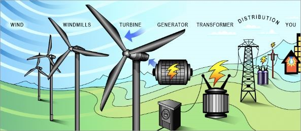

Introduction of saving money and sources with wind energy
Saving money with wind energy involves harnessing the power of the wind to generate electricity, providing a sustainable and cost-effective alternative to traditional energy sources. Wind turbines convert kinetic energy from the wind into electrical power, offering serval financial benifits. Initial setup costs may be high but long-term saving arise from reduced reliance on conventional energy grids, lower operating costs, and potential government incentives or tax credits for renewable energy adoption.Additionally, as technology advances, the efficiency and affordability of wind energy continue to improve, making it a compelling option for those seeking economical and eco-friendly energy solutions.
SAVING MONEY
Money is an essential part of our lives. Its not only provides us with the means to fulfill our daily needs but also allows us to achieve our long-term goals and dreams.One of the most prudent and responsible ways to manages money is by saving. Saving money serves as a financial source that can provide security, freedom, and opportunities.In this essay,we will explore the improtance of saving money as a source of financial stability and empowerment.
First and foremost, saving money is a means of creating a safety net in case of unexpected expenses or emergencies. Life is unpredictable,and unforeseen circumstances such as medical emergencies, car repairs, or job loss can arise at any time.Having a savings cushion ensures that you can handle these situations without going into debt or facing financial hardship. An emergency fund, typically consisting of three to six month`s worth of living expense,offers peace of mind and financial security.
Reasons why saving money is important
Savings is crucial for everyone, regardless of their earnings, spending and life stage. Hereare some reasons why you need to start saving.
It offers peace of mind
Knowing that you have a certain amount accumulated for times of your need,gives you peace of mind.You can lead a stress-free life with the knowledgethat you will not have to struggle if things take an unexpected route.
It gives you a better future
Your savings can be the answer to a number of your goal.You can buy a house,accumulate funds for your retirement,or purchase a vechicle.You can secure your future, indulge in the best of things that life has to offer and live a very fulfilling life.
It provides for your children`s education
With a considerable amount of savings.You can fuel your chlidren`s dreams and pay for the best schools and colleges across the world.
You can plan your short-term goals
Savings are not just aimed at the long term.You can also benefits from savings in the short-term. A lot of people save for a few months and then travel.
It gives your family security in case of an unfortunate event
By saving in a disciplined manner, you can make sure that your family is well provided for. In unfortunate times, your savings can act as a cushion for your loved ones and help them overcome any financial diffculty.
SOURCES
THERE ARE MANY TYPES OF SOURCE OF MONEY (FUND)
1.) Personal saving
Personal saving money is the money set aside by individuals from their earnings or existing funds,typically kept in savings,accounts, investments, or other sercure financial instruments, with the intention of achieving specific financial goals,building an emergency fund, or providing a financial cushion for the future.
2.) Pension releases
Pension releases is a financial service or option that enables individual to withdraw a portion of the funds from their pension plans before the predetermined retirement age or date.This may be done for various reasons, including financial emergencies, early retirement, or other specific circumstances.Its important to note that pension releases may have legel and tax implications, and eligibilty criteria vary by jurisdiction and pension.
3.) Share sales and dividends
Share sales refers to the process of selling shares of selling shares of a company`s stock or equityownership in the open market or through private transactions.When an individual or entity sells shares of a company, they transfer ownership of those shares to another party in exchange for a specific amount of money, which is the sale price.Share sales can be executed for various reasons, such as profit-taking , raising capital,or divesting from a particular investment.
Divdends are payments made by a corporation ti its shareholders out of the company`s profits.They are typically distributed on a regular basis (e.g., quarterly)as a way for shareholders to receive a portion of the company`s earnings. Dividends are often paid in cash but can also be in the form of additional shares of stock. Not all companies pay dividends, and the decision to do so depends on the company`s financial performance and its chosen dividends policy.Dividends are a way for shareholders to benefit from their investment in a company beyond any potential capital gains from share price appreciation.
4.) Property sales
Property sales is the act of selling a piece of real estate, where the seller (often the property owner) transfers legal ownership to a buyer (purchaser) in return for an agreed-upon price. The sale typically involves a legal contract, the exchange of funds and the transfer of property rights. Property sales can be initiated for a range of reasons,such as investment, relocation ,or liquidation of assets.
5.) Gambling winning
Gambling winnings are the financial gains or prizes acquired by individuals through participation in gambling activities , such as casinos,lotteries,sports betting , or other games of chance. These winning may result from winnings bets, jackpots, or other forms of luck-based gains. The amount of gambling winnings acn vary widely and may be subject to taxation in some jurisdictions.
6.) Inheritances and gift
While both Inheritance and gifts involve the transfer of assets, the key distinction is the timing and circumstances surrounding the transfer. Inheritance typically occurs after the death of the owner,while a gift is usually given during the lifetime of the donor. Additionally, Inheritance laws and may involve the execution of a will or legal documents, where as gifts are typically subject to gift tax laws and regulations to prevent abuse or avoidance of taxation.
7.) Compensation from legal rulings
Compensation from legal rulings refers to financial or non-finanicial payments and remedies awarded by a court or legal authority to an individual or entity as a result of a legal judgment or decision. These Compensations are typically provided to rectify a harm, loss, or injury suffered by the claimant due to the actions or negligence of another party.
WIND ENERGY
Once called windmills, the technology used to harness the power of wind has advanced significantly over the past ten year, with the united states increasing its wind power capacity 30% year over year .Wind turbines, are they are not called, collect and convert the kinetic energy that wind produces into electricity to help power the grid.
Wind eneryg is actually a by product of the sun. The sun`s uneven heating of the atmosphers, the earth`s irregular surfaces (mountains and valleys ), and the planets revolution around the sun all combine to creat wind. Since wind is in plentiful supply, its a sustainable resources for a long as the sun`s rays heating the planet.
In additions, because wind power is a growing industry, it`s adding jobs to communities around the country. currently, there are utility-scale wind plantsin 41 states that have created more than 100,000 jobs for Americans.

This aerial view of a wind turbine plant shows how a group of wind turbines can make electricity for the utility grid. The electricity is sent throught transmission and distrubination lines to homes , businesses, schools , and so on. Wind power or wind energy describes the process by which the wind is used to generate mechanical power or electricity. Wind turbines convert the kinetic energy in the wind into mechanical power. This mechanical power can be used for specific tasks (such as grinding grain or pumping water), or can be converted into electricity by a generator.
You can learn how wind turbines make electricity and see an illustration of the components inside a wind turbine, or view a wind power animation that shows how moving air rotates a wind turbine’s blades and how the internal components work to produce electricity.
CONTACT US
Lovely Professional University is located on the Jalandhar-Delhi G.T. Road, (Punjab)
9696637798
devanandc902@gmail.com
CREATED BY
(DEVANAND CHAUDHARY)
(JHANVI SHARMA)
(SOMYA DUTT)